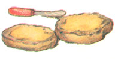
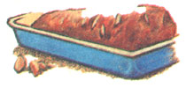
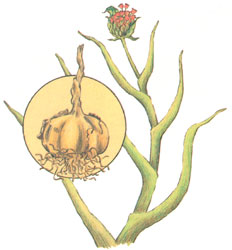
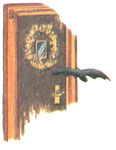
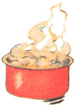

Five thousand years ago, 15 pounds of garlic ( Allium sativum ) would buy a slave in Egypt. It's said that slaves there went on strike when garlic was withheld from their diet. Roman legions considered caraway bread and garlic their "survival foods." The herb was important, too, in Greek, Chinese, and Hebrew cultures.
These ancients were wise in their esteem of this plant, sometimes called "a ruffian with a heart of gold." The essential oil that gives this ruffian its pungent odor and healing power is sulphide of allyl. Garlic is rich in iodine and contains antiseptic and mosquito-repellent properties. During World War I, wounds were treated with sterilized pads of sphagnum moss soaked in diluted garlic juice, and herbalists have long used it as a diuretic and to produce perspiration.
Garlic (from the Anglo-Saxon gar, meaning "spear," and leac, meaning "leek") can be planted in the fall or early spring in a sunny, sheltered spot in well-drained, sandy but fertile soil. Sow cloves about two inches deep and six inches apart and keep well weeded. You might want to use this member of the onion family as a companion plant for raspberries and roses to deter Japanese beetles and improve growth and health.
Flowers with flamboyant, white heads will bloom in June. These should be removed in the bud stage. In spring, fertilize fall-planted bulbs with a nitrogenous fertilizer, and dress all garlic plants with sulphate of potash in midsummer. Staking the spiky, grayish green plants will protect them from wind damage. In five or six months, when the leaves begin to droop and turn yellow, dig up the underground bulbs, dry them for a brief time in the sun, cut off or braid the leaves, then clean and hang the bulbs in a cool, dark, dry place.
A favorite use for garlic - aside from flavoring stews, soups, salads, and vegetables - is to insert cloves into meats such as lamb and pork to improve taste and tenderness. Also, garlic butter, which calls for four macerated cloves per quarter pound of butter, will enhance the taste of any bread.
A simple, safe, and effective garden spray can be made by adding garlic cloves to water in a blender and straining the liquid through several layers of cheesecloth. Sprayed on your garden, the mixture will keep numerous pests at bay. The odor of garlic is famous, too, for discouraging vampires . . . and lovers! Fortunately, chewing a few sprigs of parsley after consuming this herb should overcome the latter problem.
Illustrations by Kay Holmes Stafford
|
 Garlic butter enlivens any bread. |
 Insert cloves for tenderer, tastier meat. |
 Garlic was thought to keep away vampires. |
|
 Boiling destroys garlics medicinal qualities. |
 |
|